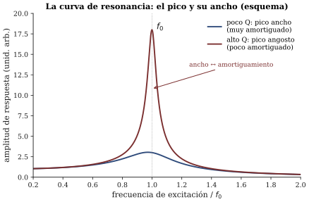

Capítulo 10 — Resonancia, impedancia y acoplamiento
Lectura previa a la sesión 10. Objetivos: OA1.2, OA1.3 (panorama), OA3.2 y OA5.2 (hito 2 y clínica de proyecto).
El empujón que llega a tiempo
Todo el mundo ha empujado un columpio, y por eso todo el mundo sabe ya — aunque no lo haya puesto en palabras — la idea central de este capítulo.
Un columpio tiene su vaivén propio: suéltelo desde un costado y oscilará a un ritmo que no eligió usted ni elige el niño — lo eligen el largo de las cadenas y la gravedad. Ese ritmo es su frecuencia propia, que anotaremos f_0, y es el pariente directo de las frecuencias características que usted ya conoce desde la sesión 3: es lo que hace el sistema cuando lo dejan en paz. A eso lo llamamos oscilación libre, y su destino es siempre el mismo: decaer, porque el roce cobra su parte en cada ciclo.
Pero usted no deja el columpio en paz: lo empuja. Y aquí está el experimento que le pido hacer mentalmente (o en la plaza más cercana, que es mejor). Intente empujar el columpio al doble de su ritmo, o a la mitad. Es frustrante: la mitad de sus empujones llegan cuando el columpio viene de vuelta, lo frenan en lugar de ayudarlo, y el resultado neto es un bamboleo mediocre. Ahora empuje a SU ritmo, el del columpio. Cada empujón — aunque sea suave — llega exactamente cuando el columpio se aleja de usted. Todos suman. Con dos dedos, un adulto lleva a un niño a alturas que asustan a la abuela.
Eso es la resonancia: cuando un sistema es forzado desde afuera, su respuesta es máxima si la frecuencia de la excitación coincide con su frecuencia propia. No hay magia ni “simpatía” misteriosa: hay empujones que se acumulan en vez de cancelarse (Benade 1990, sec. 10.1, empieza exactamente aquí).
En la sesión 9 usted dejó escrita una pregunta: ¿qué determina que un sistema “prefiera” vibrar en sus frecuencias y no en las que yo le impongo? Ya tiene la mitad de la respuesta. La otra mitad — que el sistema en verdad NO se niega a vibrar a otras frecuencias, solo responde poco y de mala gana — la va a oír en la primera media hora de la sesión.
El retrato de un resonador: la curva de respuesta
Imagine ahora que hacemos el experimento del columpio con método: forzamos al sistema a cada frecuencia posible, siempre con la misma fuerza, y anotamos cuánto responde. El gráfico resultante — amplitud de respuesta contra frecuencia de excitación — es la curva de respuesta, y es el retrato más útil que la acústica sabe hacer de un objeto. Lejos de f_0, la curva es baja. En f_0, hay un pico. En la sesión va a ver (y oír) esa curva dibujarse en tiempo real, con una demo en que usted barre la frecuencia de excitación y escucha a la respuesta inflarse al pasar por la resonancia.
La pregunta interesante es qué tan ancho es el pico, y la respuesta la tiene el amortiguamiento — el roce que disipa la energía de la vibración. Poco roce: pico alto y angosto; el sistema responde muchísimo, pero solo si usted le acierta casi exacto (piense en una copa de cristal, que exige SU nota). Mucho roce: pico bajo y ancho; el sistema responde algo a muchas frecuencias vecinas, sin entusiasmarse por ninguna. Benade midió esto con una humilde bandeja de lata (Benade 1990, sec. 10.7), y usted conoce el fenómeno de la vida real: ese objeto — un vaso en la repisa, una moldura del auto — que zumba únicamente cuando pasa por él UNA nota concreta de la música. Ahora sabe qué es: un resonador de pico angosto al que alguien, por fin, le acertó (figura 1).

Hay un segundo personaje, menos famoso y musicalmente decisivo: el transiente de ataque. Un resonador no responde de inmediato. Como el columpio, necesita acumular empujones antes de alcanzar su amplitud de régimen, y ese arranque toma tiempo (Benade 1990, sec. 10.2). Aquí va una pista para la demo, formulada como pregunta: ¿qué esperaría usted — que el resonador de pico angosto arranque más rápido o más lento que el de pico ancho? Piénselo con el columpio: acumular una oscilación gigante con empujones suaves, ¿es cosa de dos empujones o de muchos? En la sesión, el mismo slider que le cambia el ancho al pico le va a cambiar la duración al arranque, y esa coincidencia no es casualidad: son dos caras de la misma moneda.
Un misterio con elástico
Ahora, el problema que de verdad abre la segunda mitad del semestre. Consiga un elástico grueso, estírelo entre los dedos y púlselo. Vibra — se ve perfectamente — y sin embargo casi no se oye. Guarde esa observación, porque es escandalosa: en la sesión 3 usted aprendió que el sonido ES vibración, ¿y aquí hay vibración sin sonido?
El diagnóstico tiene nombre técnico, y conviene conocerlo de entrada: impedancia, la resistencia de un sistema a ser puesto en movimiento. La cuerda delgada es, para el aire, un mal socio: vibra con mucha fuerza pero corta el aire sin empujarlo, como un cuchillo que rema. La energía está ahí, atrapada, sin camino de salida hacia el aire. Para liberarla hace falta un intermediario que hable los dos idiomas — algo que la cuerda pueda mover y que a su vez mueva mucho aire —, y a la calidad de esa conexión la llamamos acoplamiento (C&G cap. 5, pp. 183–202, es el capítulo puente que este capítulo sigue).
Todos los instrumentos de cuerda que usted conoce cargan con este problema, y todos lo resuelven igual: la cuerda no trabaja sola. Apoya su vibración, a través del puente, en una tapa o caja que sí sabe empujar aire. En la sesión, el experimento del elástico sigue con una caja de cartón, y trae una pregunta con trampa que no le voy a responder aquí — solo se la dejo armada: si la caja hace sonar al elástico más fuerte, pero nadie le agregó energía (usted lo pulsó igual de fuerte), algo tiene que ceder a cambio. ¿Qué? Recuerde la sesión 6: sonar más fuerte es transferir energía más rápido. Escriba su predicción antes de venir.
La botella: un resonador de bolsillo
El taller de la sesión se hace con el resonador más barato y más noble que existe: una botella. Sople rasante sobre la boca de una botella vacía y obtendrá una nota grave, sorprendentemente pura y estable.
¿Qué vibra ahí? No conteste rápido. No es el vidrio (eso es lo que suena cuando la GOLPEA, y ya sabe desde la sesión 3 que eso es otro asunto). Cuando usted sopla, lo que oscila es el aire mismo: el aire del cuello sube y baja en bloque, como un tapón, y el aire del cuerpo de la botella se comprime y expande empujándolo de vuelta, como un resorte. Una masa, un resorte: el sistema más simple del curso, con una sola f_0, bien definida y — esto es lo valioso — medible con el afinador de su celular. Este resonador tiene apellido propio (Helmholtz, el mismo que volverá a aparecer en s11) y un capítulo de ejercicios en ROS cap. 4.
El taller le va a pedir dos predicciones por escrito antes de soplar nada, y se las adelanto para que llegue con opinión formada — discútalas con alguien, mejor si no estudia lo mismo que usted:
- Si le agrego agua a la botella hasta la mitad y soplo, la nota ¿sube o baja respecto de la botella vacía? ¿Cuánto, a ojo — un tono, una quinta, una octava?
- Si en vez de soplar la golpeo con una cuchara, el agua ¿sube o baja la nota?
Si le tinca que las dos respuestas son la misma, o que son distintas, en ambos casos le conviene poder decir por qué. La pista está en el párrafo anterior: pregúntese, en cada caso, quién recibe la energía.
El mapa de lo que viene
Este capítulo es el puente hacia la última parte del curso: los instrumentos como sistemas. Con las herramientas de hoy — resonancia, curva de respuesta, impedancia, acoplamiento — las familias de instrumentos se ordenan por una sola pregunta: ¿cómo le llega la energía al sistema vibrante?
A veces llega de una vez: golpear, pulsar (eso ya lo estudiamos en las sesiones 3 y 4 — el sonido nace fuerte y decae, oscilación libre). Y a veces llega de forma continua: el arco que frota (sesión 11), el soplo (sesión 12), el aire de los pulmones a través de las cuerdas vocales (sesión 13). Los sonidos sostenidos de la música — los que pueden crecer, mantenerse, cantar — viven todos en esta segunda familia, y esconden una pregunta preciosa que Benade convirtió en el corazón de su libro (Benade 1990, sec. 20.2): si la energía llega pareja, sin ritmo — un soplo constante, un arrastre continuo —, ¿de dónde sale la NOTA, ese vaivén exquisitamente periódico? ¿Quién le pone el ritmo? La sesión apenas siembra esa idea; las dos siguientes la cosechan.
La clínica: su proyecto pasa al pizarrón
La sesión 10 es también el hito 2 de su proyecto (10 %): al inicio de la clase usted entrega su compilado (radiografía espectral de s08, mapa de escala de s09, bitácora al día, estado respecto de lo prometido en el hito 1) — la pauta publicada tiene el detalle. En el segundo módulo presentará ese avance a otra mesa, y escuchará los avances de otros, con una pauta de retroalimentación estructurada: dos fortalezas, dos dudas, una sugerencia medible. Traiga el objeto: un proyecto que suena se discute mejor que un proyecto contado. Y llegue con esta pregunta ya pensada para su propio objeto, porque es la que la clínica le va a hacer: ¿dónde están sus resonancias, y quién es su “caja”?
Preguntas que la sesión va a responder
- ¿Qué determina que un sistema responda mucho a una frecuencia y poco a las demás? ¿Y qué fija el ancho de esa “zona de entusiasmo”?
- El resonador de pico angosto, ¿arranca más rápido o más lento que el de pico ancho? ¿Qué tiene que ver eso con el ataque de un instrumento?
- El elástico sobre la caja suena más fuerte sin energía extra: ¿qué cede a cambio?
- La botella con agua hasta la mitad: ¿sube o baja la nota al soplar? ¿Y al golpear? ¿Por qué habrían de ser respuestas distintas?
- Si el soplo es parejo y continuo, ¿de dónde sale una nota periódica y estable?
Referencias del capítulo
- Benade (1990), cap. 10 (secs. 10.1–10.8 y EEQ 10.9) — péndulo forzado, transiente inicial, amortiguamiento, la bandeja de lata y las implicancias musicales; sec. 20.2 — regímenes de oscilación (solo sembrada aquí).
- Campbell & Greated (1987), cap. 5, pp. 183–202 — resonancia, impedancia y acoplamiento: el capítulo puente hacia los instrumentos.
- Rossing, Moore & Wheeler (2002), cap. 4 (secs. 4.1–4.11) — resonancia, impedancia, resonador de Helmholtz y autoexcitación, con ejercicios; cap. 2 — sistemas vibrantes y amortiguamiento.
- Roederer (1997), cap. 4, sec. 4.3 — espectros y resonancia. En español.